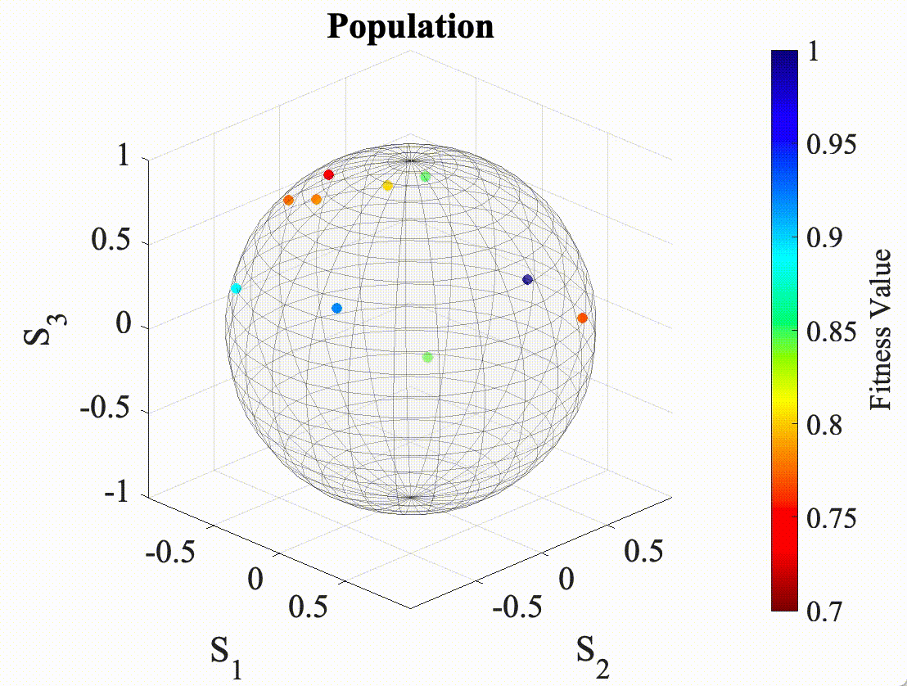

I am currently working on two research projects. The first belongs to my
Masters thesis project, in which Dr. Covantes is my main advisor and Dr.
Lopez-Mago is my co-advisor. The second project came out from a final
assignment of a course, which my teammate Mauricio Mendez and myself are
now transforming into a research paper with the help from Dr. Bayliss. I
now provide a brief description of both works.
Jones Matrix Characterization via Evolutionary Strategies
Jones calculus provides a robust and straightforward method to
characterize polarized light and polarizing optical systems using
two-element vectors (Jones vectors) and 2 x 2 matrices (Jones matrices),
respectively. Jones matrices are used to determine the retardance and
diattenuation introduced by an optical element or a sequence of
elements. Moreover, they are the tool of choice to study optical
geometric phases. However, the current sampling method for
characterizing the Jones matrix of an optical element is inefficient,
since the characterization of any given element is time-consuming. In
this study, we present an initial approach for solving the problem of
finding the eigenvectors that characterize the Jones matrix of a
homogeneous optical element through Evolutionary Strategies (ES). We
restrict our study to matrices with mutually orthogonal eigenvectors,
which in the context of polarized light, are named homogeneous Jones
matrices. We evaluate the analytical performance of an Evolutionary
Algorithm (EA) with a Polynomial Mutation operator and a Genetic
Algorithm (GA) with a Simulated Binary crossover operator and a
Polynomial Mutation operator, and compare the results with those
obtained through the traditional sampling method. The analytical results
show that both the EA and the GA out-performed the traditional sampling
method of 720 measurements, by requiring in average 103 and 179 fitness
functions measurements respectively, while having a perfect rate of
convergence.

Figure 1. Evolution of a population of polarization states over
the Poincare sphere using an Evolutionary Algorithm. As it can be
seen, the population evolves towards the global optima of the search
space.
A Multi-Verse Hyper Heuristic for Solving the Knapsack Problem
Heuristics have proved to be a reliable technique for solving
challenging combinatorial optimization problems These heuristics are
customized for each particular problem domain and achieve good-quality
solutions under various scenarios. However, no single heuristic performs
the best on every instance of the problem. This fact opens the door for
methods such as the hyper-heuristics that combine the strengths of
single heuristics to build-up more competent solvers. In this work, we
present a novel hyper-heuristic model based on the multi-verse optimizer
for solving the knapsack problem. We tested the hyper-heuristic model on
a set of knapsack instances from different sources and compared its
performance against single heuristics and an evolutionary-based
hyper-heuristic approach taken from the literature. We obtained
promising results where the proposed approach outperformed both the
single heuristics and the evolutionary-based hyper-heuristic model.
These results support the idea that the multi-verse optimizer represents
a reliable strategy to produce hyper-heuristics for solving the knapsack
problem.
Figure 2. Heuristic selection at three different stages of the
KP. Initially, the problem features maps to KP1 and falls
closest to H1, so H1 is used to select an item
for the knapsack. Then, with one less item to pick from, the KP maps
to KP2 and still falls closest to H1, so H1
is used to pick the next item. Finally, the KP maps to KP3
and now H2 is the closest heuristic and, therefore, H3
is used to pick the last item.